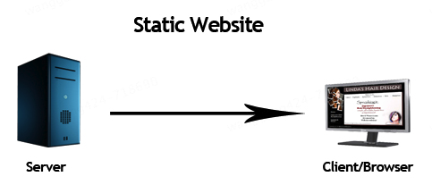
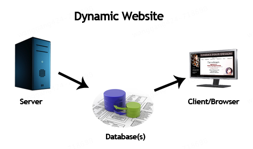
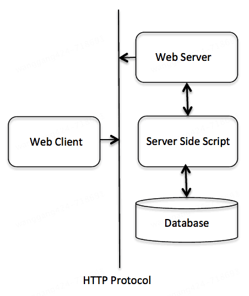
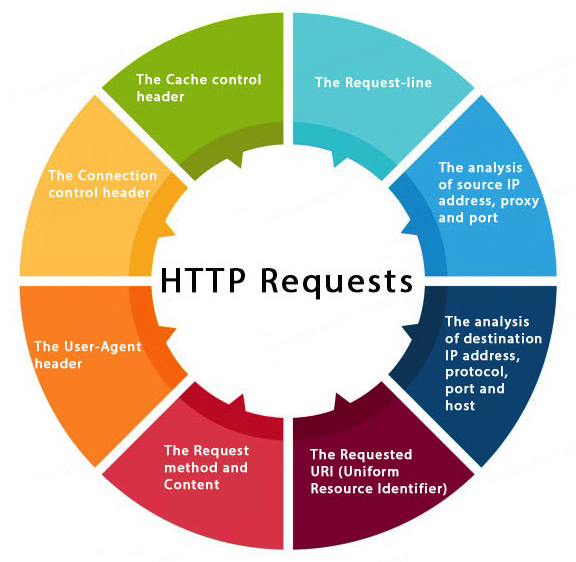
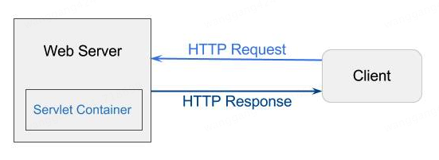

JavaWeb开发基础7个Web术语解析¶

7个Web术语¶
Website: static vs dynamic
HTTP
HTTP Requests
GET vs POST
Servlet Container
Server: Web vs Application
Content Type
Website: static vs dynamic¶
网站内容包括文本、图片、音频、视频，通过URL来访问。网站分为静态网站和动态网站。
静态网站

静态网站是用HTML编写的，所有内容都包含在网页内，就像是打印出来的一样。
动态网站

动态网站分为客户端和服务端，内容是可以动态变化的，可以根据用户请求动态更新网页内容。服务端语言有Servlet、ASP.NET等。
HTTP¶

HTTP是Hypertext Transfer Protocol缩写，超文本传输协议，位于OSI网络分层模型的应用层（第七层）。
超文本（Hypertext）是一种文本形式，它不仅包含普通的文本内容，还包含了可以链接到其他文本或资源的元素。这些链接通常称为“超链接”（Hyperlinks）。超文本的概念由Ted Nelson在1960年代提出，并在万维网（World Wide Web）的发展中得到了广泛应用。
HTTP具有以下特点：
media independent：支持任何类型的媒体内容
connectionless：无连接，客户端发送请求后，就断开了连接
stateless：无状态，服务端不会保留客户端请求的状态，不知道谁是谁
HTTP是基于TCP/IP协议的，通过TCP建立可靠连接。为什么说HTTP是无连接的，但又是基于TCP可靠连接的？如果想要可靠地传输数据，那么就必须要有稳定可靠的连接，保证数据不丢失，这个连接就是TCP连接。HTTP正是通过TCP连接来发送和接收数据的。
在HTTP/1.0中，每次请求都会建立一个新的TCP连接，完成请求后立即关闭连接。在HTTP/1.1中，引入了持久连接，允许多个请求/响应在同一个TCP连接上进行，但每个请求/响应对话仍然是独立的。HTTP/1.1是持久连接，那么还能叫做无连接吗？是的，仍然是无连接。持久连接是通过
Connection: keep-alive
头部实现的，允许连接在一段时间内保持打开状态，不需要重新建立和关闭连接。无连接的本质是每个请求/响应对话都是独立的，强调的是独立。
HTTP Requests¶
HTTP请求是客户端发送给服务端的请求，包含以下内容：

The Request-line（请求行）
The analysis of source IP address, proxy and port（源信息）
The analysis of destination IP address, protocol, port and host（目标信息）
The Requested URI (Uniform Resource Identifier)（链接）
The Request method and Content（方法和内容）
The User-Agent header（请求头）
The Connection control header（请求头）
The Cache control header（请求头）
可以在浏览器中通过F12开发者工具，查看HTTP请求信息。
GET vs POST¶
GET和POST是HTTP请求的2个主要方法，它们的区别如下：
数据传输方式
GET：将请求参数附加在URL的查询字符串中，数据通过URL传输。例如：
http://example.com/page?param1=value1¶m2=value2POST：将请求参数包含在请求体中，数据通过请求体传输，不会显示在URL中
安全性
GET：由于参数显示在URL中，敏感信息容易被暴露在浏览器历史记录、日志文件等地方，因此不适合传输敏感数据
POST：参数在请求体中传输，相对来说更安全，但并不意味着完全安全，仍需使用 HTTPS 来加密数据
数据长度限制
GET：由于URL长度限制（通常为2048字符），GET请求传输的数据量有限
POST：没有明显的数据长度限制，可以传输大量数据
幂等性
GET：幂等的，即多次相同的GET请求应该产生相同的结果，不会对服务器资源产生副作用
POST：非幂等的，即多次相同的POST请求可能会产生不同的结果，通常用于提交数据或触发服务器上的操作
缓存
GET：可以被浏览器缓存，适合用于获取不变的数据
POST：默认情况下不会被缓存，适合用于提交数据或执行操作
用途
GET：主要用于请求数据，例如获取网页内容、查询信息等
POST：主要用于提交数据，例如提交表单、上传文件等
Servlet Container¶

Servlet容器（Servlet Container）是一个运行环境，用于管理和执行Java Servlet。它属于Java EE，负责处理客户端请求、管理Servlet生命周期以及提供各种服务（如安全性、并发性、资源管理等）。
Servlet容器是Web服务器（Web Server）的一部分，我们常说的Apache Tomcat，既是一个Web服务器（内置HTTP Server），也是一个Servlet容器。它能够处理静态内容和动态内容，提供了一个完整的运行环境来开发和部署Java Web应用。
Server: Web vs Application¶
Web服务器主要处理静态内容和HTTP请求，而应用服务器主要处理动态内容和业务逻辑。
传统的Web服务器：
Apache HTTP Server：一个开源的Web服务器，广泛用于托管静态网站和动态Web应用
Nginx：一个高性能的Web服务器，特别擅长处理大量并发连接，常用于反向代理和负载均衡
现代的Web服务器：
Node.js：一个基于Chrome V8引擎的JavaScript运行时环境，使用事件驱动、非阻塞I/O模型，使其非常适合构建高性能、可扩展的网络应用
Caddy：一个现代的Web服务器，默认支持HTTPS，配置简单，支持自动TLS证书管理
应用服务器：
Apache Tomcat：虽然主要是一个Servlet容器，但也可以作为一个轻量级的应用服务器
GlassFish：一个完整的Java EE应用服务器，支持所有Java EE规范
JBoss/WildFly：一个开源的Java EE应用服务器，提供全面的企业级功能
WebLogic：Oracle提供的企业级应用服务器，支持广泛的企业功能
WebSphere：IBM提供的企业级应用服务器，广泛用于大型企业应用
在实际应用中，Web服务器和应用服务器通常会一起使用，比如：
Nginx作为前端Web服务器，处理静态内容，将动态请求转发给后端的Tomcat应用服务器处理
Nginx作为反向代理，接收所有请求，并根据请求类型进行处理或转发，给后端的应用服务器Tomcat，同时可以实现负载均衡
Servlet容器既可以是Web服务器的一部分，例如，Apache Tomcat就是一个既包含Web服务器功能又包含Servlet容器功能的服务器。Tomcat能够处理静态内容（如HTML、CSS、JavaScript文件）和动态内容（如通过Servlet生成的内容）。
Servlet容器也可以是应用服务器的一部分，例如，在企业级应用服务器（如GlassFish、JBoss/WildFly）中，应用服务器不仅包含Servlet容器，还提供了许多其他企业级功能，如事务管理、消息队列、EJB（Enterprise JavaBeans）支持等。
+----------------------+ +----------------------+
| Web Server | | Application Server |
| | | |
| +------------------+ | | +------------------+ |
| | Servlet Container| | | | Servlet Container| |
| | (Tomcat) | | | | (GlassFish, | |
| +------------------+ | | | JBoss/WildFly) | |
| | | +------------------+ |
+----------------------+ | |
| +------------------+ |
| | Other Enterprise | |
| | Features (EJB, | |
| | Transactions, | |
| | Messaging, etc.) | |
| +------------------+ |
+----------------------+
Content Type¶
Content-Type是HTTP协议中的一个Header字段，用于指示发送给接收者的数据的媒体类型（MIME类型）。它告诉客户端或服务器如何解释和处理请求或响应中的数据。Content-Type在HTTP请求和响应中都可以使用。
常见Content-Type如下：
文本类型：
text/html：HTML文档text/plain：纯文本text/css：CSS样式表text/javascript：JavaScript代码
应用类型：
application/json：JSON格式的数据application/xml：XML格式的数据application/x-www-form-urlencoded：表单数据，通常用于POST请求application/octet-stream：二进制数据流，通常用于文件下载
多部分类型：
multipart/form-data：用于表单文件上传，表单数据可以包含文件multipart/byteranges：表示响应包含多个部分，每个部分是一个字节范围
图像类型：
image/jpeg：JPEG图像image/png：PNG图像image/gif：GIF图像
音频和视频类型：
audio/mpeg：MPEG音频文件video/mp4：MP4视频文件